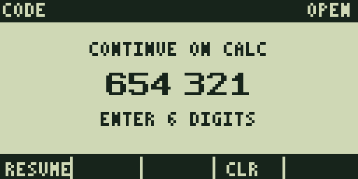
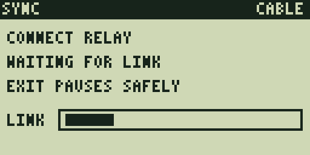
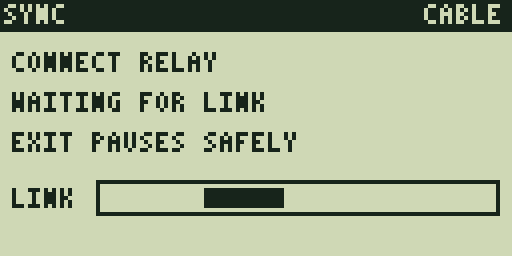
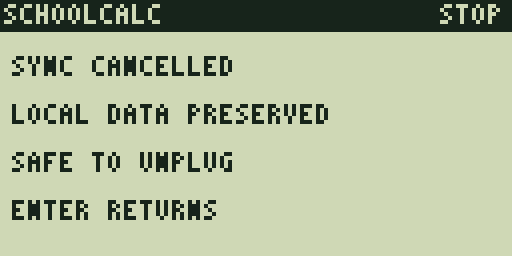

Both scenarios passed every configured text, transition, recovery, and Version-5/M QR assertion. These are complete 128×64 framebuffers captured by the repository’s MAME TI-86 scenario harness after a real TI-OS launch and virtual Graph Link installation. Each card retains the framebuffer digest recorded by the acceptance report.
Installed study
Cold code entry through a graphic card, answer, summary, quiz, durable result, and QR.
Cold launch: Enter Code
01-enter-code
frame SHA-256 83c2bba3d57e36157ed2de6f0711f70410b8248877010ec7b11cd8382f9dba8d · PC 63222
First Digit
02-first-digit
frame SHA-256 8c55e11c4ce0fd1992f123091e2f0a2ed8a269c4101a4503ae5f18d2c198c684 · PC 63217
Second Digit
03-second-digit
frame SHA-256 375c5b051aa304d92c520326ceace1af2ce875ba16b716eefa150b9525cc119e · PC 63212
Third Digit
04-third-digit
frame SHA-256 cd692d0e5fef1e9ad38ad5f2ab94d573d4a958969e13cbfe49c31598520d487b · PC 63210
Fourth Digit
05-fourth-digit
frame SHA-256 7c27aad11779dc404f6dc9f8306ae968f5cb8c82bc257fd4de3c6bc79f2343a8 · PC 63212
Fifth Digit
06-fifth-digit
frame SHA-256 498ae4696c40d5cb6de36bbb1b384c66e505a9b8902553da13402dd4a865ca8d · PC 63208
Six-digit code ready
07-code-ready
frame SHA-256 d3ce63a4e1fdd50abe3fd76fc530a02e31902130ebac6ad1b0c6f79bacdb30f3 · PC 63208
Graphic flashcard front
08-graphic-card-front
frame SHA-256 623509154009951f657c0c3658995f33c942044162fe6759459a3d265de4332b · PC 60815
Graphic flashcard answer
09-graphic-card-back
frame SHA-256 7636fdb8c97750392205d36e9dd501081c13fee976288afb35a0fcd1402798b4 · PC 60806
Study summary
10-study-summary
frame SHA-256 90290eb167fb3623b289b6ac2abad10f6f6e8de0b44bd5ca1accd2d57a4c7504 · PC 60808
Prescribed quiz prompt
11-quiz-prompt
frame SHA-256 7246b236ff2991e1676cfc3573f6753a48b9b56922b72ce9e7daf0a35f34975c · PC 60806
A–E answer surface
12-quiz-choices
frame SHA-256 08ccdf1e882b4f67f63246bce2b015c4b823c82f29575a409c033029a6b970a9 · PC 60809
Result queued before success
13-durable-result
frame SHA-256 d7355b2d47c3afbf08b16e9332d3d7a8be069c071391756f4d4df1e0af7078fa · PC 60808
Offline Version-5/M result QR
14-result-qr
frame SHA-256 7528c5b27267be2e614e937f6a062cebd186e005c1926e35e4c0d6457a48cb51 · PC 59270
Study not loaded yet
A code whose immutable study module is not installed enters one-time relay recovery without losing local state. The calculator creates its durable entry request, waits for the relay, and can pause back to Enter Code without discarding local state.

Unresolved code
01-missing-code-ready
frame SHA-256 5ab8699d2b9c9d9692d1641b335675d97f650a214894d763182610ba2d47e7d4 · PC 63214

Connect the relay
02-connect-relay
frame SHA-256 d2e18b747aabe41e967c66a65f4b053a687f4b35f65b0c808eb4879136fccfe0 · PC 58293

Live relay search indicator
03-link-active
frame SHA-256 c3cf1cf23a03faec3331a69e6a9cabf67e0c2feb205029059e5faefcec98b645 · PC 58293

Safe paused recovery
04-sync-paused
frame SHA-256 5d3a638a89900978e934104e1806d21e4992016a32336d970b0cd90145e58dc2 · PC 61307
Return to Enter Code
05-return-to-code
frame SHA-256 83c2bba3d57e36157ed2de6f0711f70410b8248877010ec7b11cd8382f9dba8d · PC 63211